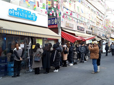
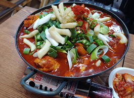
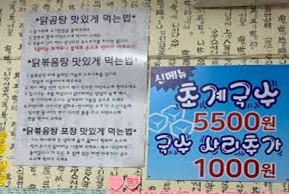

박한솔 - 어머니와 아들
주소: 서울특별시 서대문구 홍은중앙로 100-1
Operation hours: 11:30~22:00
Break time: 15:00~17:00

홍은동에 위치한 포방터시장은 저주받은 상권으로 유명한 곳이었다. 교통이 좋지 않은 구석진 곳에 위치해 있기 때문에 근처에 거주하는 주민들을 제외하고는 사람들의 발길이 많지 닿지 않았던 곳이다. 그런데 ‘백종원의 골목식당’이라는 프로그램이 이곳을 찾으면서 완전히 달라졌다. 방송에 출연한 식당들에 관심을 가진 시청자들이 이곳을 찾기 시작했고, 상권은 이전에 비해 급격하게 좋아졌다.
Break time에 이곳을 방문하여, 사장님에게 대기표를 받았다. 잠시 근처에서 대기를 하다가, 5시가 되자 마자 입장할 수 있었다. 사장님이 백종원과 함께 찍은 사진을 포함해서, 방송을 보고 찾아온 많은 유명인들과 찍은 사진이나 싸인 역시 확인할 수 있었다. 전국적인 유명세를 탄 식당임을 다시 한번 느낄 수 있었다.

어머니와 아들 역시 이 방송에 출연한 식당 중 하나이다. ‘홍탁집’이라는 이름으로 유명한 이곳은 방송 초반에는 답답한 모습으로 시청자들의 온갖 비난을 들었지만 백종원의 솔루션을 받고 개과천선하며 화제를 끌었다. 필자의 집으로부터 아주 가까운 도보 10분 거리에 위치해 있어 시간적인 부담 없이 편하게 방문할 수 있었다.

이곳의 저녁 메뉴는 닭볶음탕으로, 25000원의 가격을 형성하고 있다. 한번 끓여진 닭볶음탕이 배치되어 나오는데, 조금 더 끓이기만 하면 빠르게 먹을 수 있다. 식당 벽에 닭볶음탕 맛있게 먹는 법이 쓰여져 있는데, 이를 따라서 먹으면 상당히 맛있게 닭볶음탕을 즐길 수 있다. 개인적으로 닭볶음탕에서 가장 마음에 들었던 것은 국물이었는데, 국물을 떠서 밥과 비벼 먹으니 밥이 술술 넘어갔다. 매콤하지만 크게 자극적이지 않아 밥과 상당히 잘 어울렸다.

필자는 친구와 함께 둘이서 식당을 찾았는데, 둘이서 먹기에는 양이 많아 조금 남기고 말았다. 많은 사람들이 라면사리 등을 추가해서 먹지만 필자는 배가 불러 시키지 못하여 아쉬웠다. 그렇지만 1인당 만원이 넘는 가격이 아깝지 않을 정도로 만족스러운 식사였다. 방송이 나간 지 꽤 오랜 시간이 지났는데도 인기를 유지하는 것은 뛰어난 맛이 보장되기 때문일 것이다. ‘백종원의 골목식당 포방터시장’편을 시청했고, 이 식당에 대한 호기심이 있는 사람이라면, 이곳을 방문하라고 추천하고 싶다. 화제성만 갖춘 식당이 아니라, 뛰어난 맛 역시 보유한 식당이기 때문에 후회하지 않을 것이다.